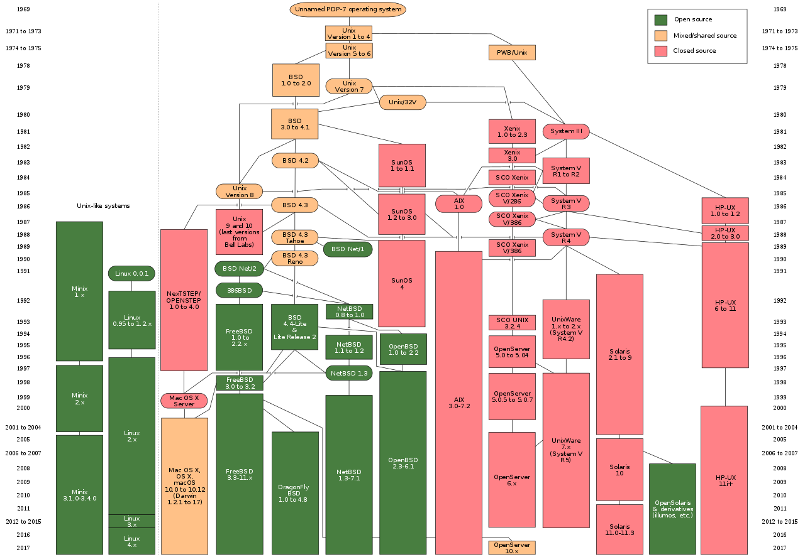
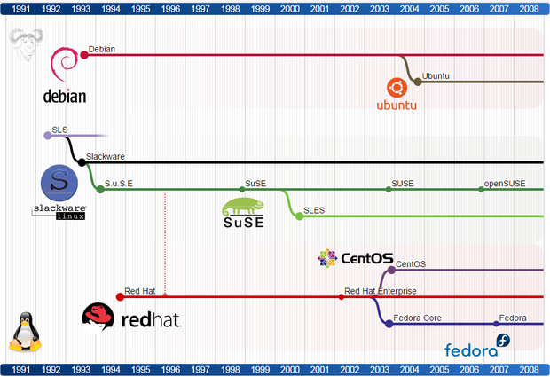

# Linux Architecture & Deployment <!-- .element: class="subtitle" --> **Notes:** Learn about the history of the Linux operating system. --- ## What is Linux? **Notes:** [Linux](https://en.wikipedia.org/wiki/Linux) is a family of free and open source software operating systems built around the [Linux kernel](https://en.wikipedia.org/wiki/Linux_kernel), an [operating system kernel](https://en.wikipedia.org/wiki/Kernel_(operating_system)) first released in 1991, by [Linus Torvalds](https://en.wikipedia.org/wiki/Linus_Torvalds). --- ### Unix history <!-- .element: class="hidden" --> <p></p> **Notes:** It is based on [Unix](https://en.wikipedia.org/wiki/Unix), an operating system released in 1971 at AT&T's [Bell Laboratories](https://en.wikipedia.org/wiki/Bell_Labs) in the United States. As it was [proprietary software](https://en.wikipedia.org/wiki/Proprietary_software), Linus Torvalds decided to release his own [open source](https://en.wikipedia.org/wiki/Open-source_software) kernel. --- ### Why use Linux? - Open source philosophy - Low or no upfront cost - Better system stability - Lightweight distributions (lower CPU/RAM usage & smaller size) **Notes:** There are many [reasons to use it](https://en.wikipedia.org/wiki/Linux_adoption#Reasons_for_adoption). Note that no system is perfect. Linux also has [barriers to adoption](https://en.wikipedia.org/wiki/Linux_adoption#Barriers_to_adoption), mostly the facts that it rarely comes pre-installed and that it requires users to know more about managing their operating system. --- ### Where Linux is king - [Embedded systems](https://en.wikipedia.org/wiki/Embedded_system) ([BusyBox](https://en.wikipedia.org/wiki/BusyBox) fits in 2.1MB) - [Servers](https://en.wikipedia.org/wiki/Linux#Servers,_mainframes_and_supercomputers) (more than 75% of servers, most cloud workloads, most supercomputers) --- ### Linux distribution timeline <a href='../images/linux-distribution-timeline-62fef185bdda3e997127e1ed610cf536.svg'> <p></p> </a> **Notes:** Linux is not just one operating system, it is a family of systems called [Linux distributions](https://en.wikipedia.org/wiki/Linux_distribution). For example, on desktop or server, the most popular is [Ubuntu](https://www.ubuntu.com/). [bell-labs]: https://en.wikipedia.org/wiki/Bell_Labs [busybox]: https://en.wikipedia.org/wiki/BusyBox [embedded]: https://en.wikipedia.org/wiki/Embedded_system [kernel]: https://en.wikipedia.org/wiki/Kernel_(operating_system) [linus]: https://en.wikipedia.org/wiki/Linus_Torvalds [linux]: https://en.wikipedia.org/wiki/Linux [linux-cons]: https://en.wikipedia.org/wiki/Linux_adoption#Barriers_to_adoption [linux-distros]: https://en.wikipedia.org/wiki/Linux_distribution [linux-kernel]: https://en.wikipedia.org/wiki/Linux_kernel [linux-pros]: https://en.wikipedia.org/wiki/Linux_adoption#Reasons_for_adoption [linux-servers]: https://en.wikipedia.org/wiki/Linux#Servers,_mainframes_and_supercomputers [oss]: https://en.wikipedia.org/wiki/Open-source_software [proprietary]: https://en.wikipedia.org/wiki/Proprietary_software [ubuntu]: https://www.ubuntu.com/ [unix]: https://en.wikipedia.org/wiki/Unix
GitHub
Backup copy